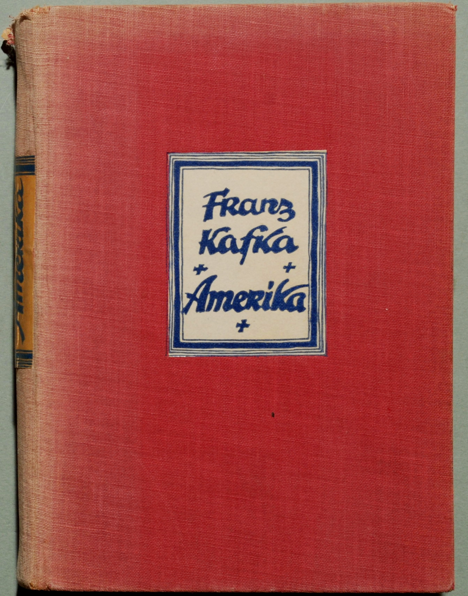

Sunday, December the 18th, 2011
back to: title, date or indexes

The greatest novel ever written, by anyone, anywhere.
Gilbert Adair on Franz Kafka's (unfinished) Amerika, in his essay “On Actemes”, collected in Surfing The Zeitgeist (1997)